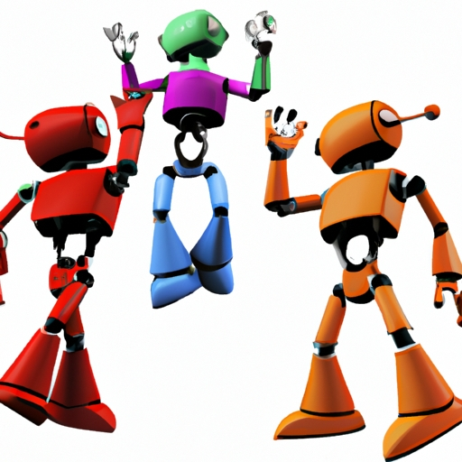

News
What is the Future of Essay Detection? AI Detector for Essays has Arrived!
What is the Next Step in Essay Detection? Discover AI Detector for Essays!
What is the Latest Innovation in Essay Detection? Introducing AI Detector for Essays!
What is the Best Way to Detect Plagiarism and Duplication? Try AI Detector for Essays Now!
More
What is the Most Accurate Solution to Check For Plagiarism? Unlock the Power of AI Detector for Essays Today!
What is a Reliable Tool To Scan For Similarities in Writing? Get AI Detector for Essays Right Away!
What is an Effective Method Of Identifying Unoriginal Content? Look No Further Than AI Detector for Essays!
What is a Revolutionary Way To Catch Unauthorized Copying? Experience AI Detector for Essays Today!
What is a Fast and Efficient System To Find Grammatical Errors in Writing? Check Out AI Detector for Essays Now!
10.What is an Easy-To-Use Tool To Spot Typos and Incorrect Uses of Words? Invest In AI Detector for Essays Now!
11.What is The Simplest Way to Detect Omitted Citations or References in Texts? Rely On AI Detector For Your Next Project !
12.What Is A Clever Way to Catch Missing Quotations or Misquotations in Writing ? Reap The Benefits Of Using AI Detector !
13.What Is A Smart Alternative To Manual Checking Of Sources ? Use The Advanced Technology Of AI Detector !
14.What Is An Innovative Tool That Automates Your Academic Paper Checking ? Don't Miss Out On The Opportunities Provided ByAI Detector !
How to Quickly Catch Grammatical and Spelling Errors with an AI Essay Detector
How to Make Sure Your Essay is Perfect with an AI-Powered Tool
How to Let an AI Help You Polish Your Essays
How to Automatically Improve Your Writing Quality with an AI Essay Detector
How to Get the Most Out of a Powerful AI Essay Detector
How to Instantly Identify Weaknesses in Your Writing with an AI Tool
How to Utilize Machine Learning for Better Grades on Written Assignments
How to Leverage Artificial Intelligence for Higher Quality Papers and Essays
How to Enhance Your Academic Performance by Using an AI Essay Detector
About Us
News
10.How to Benefit From an Advanced AI-Based Grammar Checker for Your Documents
Grammar checkers are becoming increasingly popular for helping people write better documents.. With an advanced AI-based grammar checker, you can benefit from a more accurate and efficient way of writing that will make your documents stand out! (Firstly), these powerful tools can help you identify any typos, grammatical errors or spelling mistakes that could prove detrimental to the success of your document.
Posted by
on 2023-06-15
11.How to Easily Find Plagiarism With the Help of Artificial Intelligence Technology
Plagiarism is an ever-growing problem in the modern world of technology and education.. With the help of Artificial Intelligence (AI) Technology, detecting plagiarized content has become much easier!
Posted by
on 2023-06-15
12.How to Generate Accurate Citations in Seconds with the Help of a Smart AI Tool
Generating accurate citations can be a tedious and time-consuming process, but with the help of a smart AI tool, it's (now) much easier!. The tool not only helps you quickly generate proper citations in seconds, it also offers helpful advice to ensure that the citations are as accurate as possible.
Posted by
on 2023-06-15
13.How to Use Innovative Technology for a Superior Written Assignment
Technology has revolutionized the way we do things, offering us new possibilities and tools to help us achieve our goals.. With (it), we can perform tasks faster and with greater accuracy than ever before!
Posted by
on 2023-06-15
14.How To Elevate Your Writing Style With An Intelligent Automated System?
Writing with a high level of intelligence and sophistication can be a challenge for many people.. It's often difficult to know when and how to use certain words, phrases or punctuation.
Posted by
on 2023-06-15
Analyzing the Performance of AI-Powered Grammar Checkers for Essays
Grammar checkers are an invaluable tool for (anyone) that writes, especially for those who need to write essays.. It can be a daunting task to proofread your work and ensure it is error-free.
Posted by
on 2023-06-15

Assessing the Accuracy and Reliability of Artificial Intelligence in English Composition Tests
AI is becoming increasingly popular in English composition tests, yet it's accuracy and reliability remain questionable.. It's hard to believe that a machine could accurately assess the ability of a student to effectively communicate in writing.
Posted by
on 2023-06-15
Benefits and Limitations of Using AI Essay Detectors
The use of AI essay detectors has both its advantages and drawbacks.. It can be a great tool for aiding teachers in the evaluation process, but there are also potential dangers lurking behind its implementation.
Posted by
on 2023-06-15
Comparing Different Types of AI Essay Detector Software
AI Essay Detector software is a powerful tool for comparision of different types of AI.. It can help identify areas where one type of AI may be more suitable than another.
Posted by
on 2023-06-15
Designing an Effective AI-Based System for Automated Grading of Essays
Grading essays can be a daunting task, especially when there's a lot of them!. But with the advent of AI-based systems, it doesn't have to be.
Posted by
on 2023-06-15
Evaluating the Effectiveness Of Machine Learning Algorithms For Automated Scoring Of English Compositions
Evaluating the effectiveness of machine learning algorithms for automated scoring of English compositions can be a tricky task!. Many factors come into play when determining the accuracy and correctness of these scores.
Posted by
on 2023-06-15
Examining the Role Of Human Editors In Combination With Artificial Intelligence For Enhancing English Writing Quality
English writing quality is an important aspect of communication.. It is essential that all written messages be clear and accurate for the reader to understand.
Posted by
on 2023-06-15
Exploring Advanced Features of AI Essay Detectors
AI Essay Detectors have become increasingly popular, as they can quickly scan and assess huge amounts of data.. They are used to detect plagiarism, check for grammar errors and even suggest corrections.
Posted by
on 2023-06-15
Exploring The Possibilities Of Digital Tutoring Platforms Powered By Artificial Intelligence
Digital tutoring platforms powered by Artificial Intelligence are an exciting concept, offering seemingly endless possibilities. (AI) is changing the way we learn and interact with technology, making it easier to access information and teach ourselves new skills.. One of the most intriguing applications of AI in education is digital tutoring platforms, which leverage AI-enabled capabilities to create personalized learning experiences tailored to individual learners.
The potential for digital tutoring platforms to revolutionize education is enormous!
Posted by
on 2023-06-15
How to Implement AI Essay Detection Technology in Schools
AI Essay Detection Technology is a great tool for schools to ensure the quality of student work!. Implementing it can be tricky, though; there are (several) steps that need to be taken.
Posted by
on 2023-06-15
Investigating The Potential Use Of Neural Networks To Create Customized Feedback On Student Written Texts
Investigating the potential use of neural networks to create customized feedback on student written texts has been (one of) the most fascinating research topics in recent years!. It is not only intriguing, but also could have a great impact on education.
Posted by
on 2023-06-15
Monitoring Student Writing With Natural Language Processing Techniques
Monitoring student writing with Natural Language Processing Techniques can be a powerful tool to help teachers and parents understand how students are performing in class.. It is an innovative way of analyzing written pieces to gain insight on the writer's skill level, and even detect any potential errors in writing.
Posted by
on 2023-06-15
The Impact of AI on Writing and Language Learning
The impact of AI on writing and language learning is undeniable!. We're living in a world where technology has become an integral part of our lives, from the way we communicate to how learn foreign languages.
Posted by
on 2023-06-15
Understanding the Basics of AI Essay Detectors
AI Essay Detectors (AIEDs) can be an invaluable tool in the writing process.. They allow one to quickly check for errors and get instant feedback on their work.
Posted by
on 2023-06-15
Old Posts
New Posts